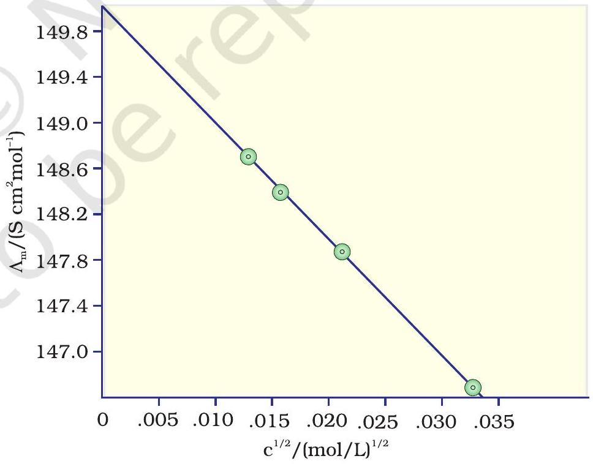
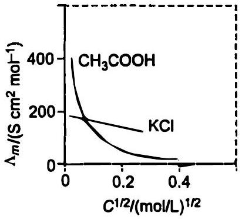
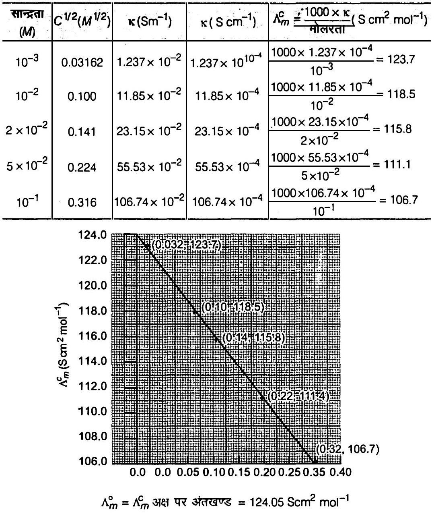
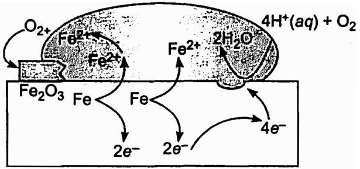

निम्नलिखित अभिक्रिया वाले सेल को निरूपित कीजिए।
E(सेल) = E(सेल )⊖-RT2 F ln Mg2+(Ag+)2
= 3.17 V-0.059 V2 log 0.130(0.0001)2 = 3.17 V-0.21 V = 2.96 V
निम्नलिखित अभिक्रिया का साम्य स्थिरांक परिकलित कीजिए-
E(सेल )⊖ = 0.46 V
डेन्यल सेल के लिए मानक सेल विभव 1.1 V है। निम्नलिखित अभिक्रिया के लिए मानक गिब्ज़ ऊर्जा का परिकलन कीजिए।
0.1 mol L-1 KCl विलयन से भरे हुए एक चालकता सेल का प्रतिरोध 100 Ω है। यदि उसी सेल का प्रतिरोध 0.02 mol L-1 KCl विलयन भरने पर 520 Ω हो तो 0.02 mol L-1 KCl विलयन की चालकता एवं मोलर चालकता परिकलित कीजिए। 0.1 mol L-1 KCl विलयन की चालकता 1.29 S / m है।
0.05 mol L-1 NaOH विलयन के कॉलम का विद्युत प्रतिरोध 5.55 × 103 ohm है। इसका व्यास 1 cm एवं लंबाई 50 cm है। इसकी प्रतिरोधकता, चालकता तथा मोलर चालकता का परिकलन कीजिए।
l = 50 cm = 0.5 m
= 87.135 Ω cm
= 0.01148 S cm-1
= 0.01148 S cm -1 × 1000 cm3 L-10.05 mol L-1
= 229.6 S cm2 mol-1
= 87.135 × 10-2 Ω m
κ = 1ρ = 10087.135 Ω m
= 1.148 S m-1
= 229.6 × 10-4 S m2 mol-1
298 K पर विभिन्न सांद्रताओं के KCl विलयनों की मोलर चालकताएं निम्नलिखित हैं। | c / mol L-1 | Λm / S cm2 mol-1 | | :--- | :--- | | 0.000198 | 148.61 | | 0.000309 | 148.29 | | 0.000521 | 147.81 | | 0.000989 | 147.09 | दर्शाइए कि Λm एवं c1 / 2 के मध्य आलेख एक सीधी रेखा है। KCl के लिए Λm° एवं A के मान ज्ञात कीजिए।
| c1/2 / (mol L-1)1/2 | Λm / S cm2mol-1 |
|---|---|
| 0.01407 | 148.61 |
| 0.01758 | 148.29 |
| 0.02283 | 147.81 |
| 0.03145 | 147.09 |

सारणी 2.4 में दिए गए आँकड़ों की सहायता से CaCl2 एवं MgSO4 के Λm° का परिकलन कीजिए।
= (119.0+152.6) S cm2 mol-1
= 271.6 S cm2 mol-1
Λm(MgSO4)o = λMg2+°+λSO42-° = 106.0 S cm2 mol-1+160.0 S cm2 mol-1
= 266.0 S cm2 mol-1
NaCl, HCl एवं NaAc के लिए Λm° क्रमशः 126.4, 425.9 एवं 91.0 S cm2 mol-1 हैं। HAc के लिए Λ0 का परिकलन कीजिए।
= Λm(HCl)o+Λm(NaAc)o-Λm(NaCl)o
= (425.9+91.0-126.4) S cm2 mol-1
= 390.5 S cm2 mol-1 .
0.001028 mol L-1 ऐसीटिक अम्ल की चालकता 4.95 × 10-5 S cm-1 है। यदि ऐसीटिक अम्ल के लिए Λm° का मान 390.5 S cm2 mol-1 है तो इसके वियोजन स्थिरांक का परिकलन कीजिए।
α = ΛmΛmo = 48.15 S cm2 mol-1390.5 S cm2 mol-1 = 0.1233
K = c α2(1-α) = 0.001028 mol L-1 × (0.1233)21-0.1233 = 1.78 × 10-5 mol L-1
CuSO4 के विलयन को 1.5 ऐम्पियर की धारा से 10 मिनट तक वैद्युतअपघटित किया गया। कैथोड पर निक्षेपित कॉपर का द्रव्यमान क्या होगा?
निम्नलिखित धातुओं को उस क्रम में व्यवस्थित कीजिए जिसमें वे एक दूसरे को उनके लवणों के विलयनों में से प्रतिस्थापित करती हैं। Al, Cu, Fe, Mg एवं Zn.
नीचे दिए गए मानक इलैक्ट्रोड विभवों के आधार पर धातुओं को उनकी बढ़ती हुई अपचायक क्षमता के क्रम में व्यवस्थित कीजिए। K+ / K = -2.93 V, Ag+ / Ag = 0.80 V, Hg2+ / Hg = 0.79 V Mg2+ / Mg = -2.37 V, Cr3+ / Cr = -0.74 V
उस गैल्वैनी सेल को दर्शाइए जिसमें निम्नलिखित अभिक्रिया होती है- Zn(s)+2 Ag+(aq) → Zn2+(aq)+2 Ag(s), अब बताइए- (i) कौन-सा इलैक्ट्रोड ऋणात्मक आवेशित है? (ii) सेल में विद्युत-धारा के वाहक कौन से हैं? (iii) प्रत्येक इलैक्ट्रोड पर होने वाली अभिक्रिया क्या है?
निम्नलिखित अभिक्रियाओं वाले गैल्वैनी सेल का मानक सेल-विभव परिकलित कीजिए। (i) 2 Cr(s)+3 Cd2+(aq) → 2 Cr3+(aq)+3 Cd (ii) Fe2+(aq)+Ag+(aq) → Fe3+(aq)+Ag(s) उपरोक्त अभिक्रियाओं के लिए Δr G⊖ एवं साम्य स्थिरांकों की भी गणना कीजिए।
= (-0.40)-(-0.74)
Eसेल ° = +0.34 V
= -(6 mol) × (96500 C mol-1) × (0.34 V)
= -196860 CV
= -196860 J
Δr G° = -196.86 kJ
= (-) (-196860 J)2.303 × (8.314 JK-1) × (298 K)
= 34.501
Kc = 3.17 × 1034
Eसेल ° = +0.03 V
= -2895 CV = -2895 J
Δr G° = -2.895 kJ
log Kc = -Δr G°2.303 R T
= (-) (-2895 J)2.303 × (8.314 JK-1) × (298 K) = 0.5074
Kc = 3.22
निम्नलिखित सेलों की 298 K पर नेर्न्स्ट समीकरण एवं emf लिखिए। (i) Mg(s)|Mg2+(0.001 M)||Cu2+(0.0001 M)| Cu(s) (ii) Fe(s)|Fe2+(0.001 M)||H+(1 M)| H2( g)( 1bar ) | Pt(s) (iii) Sn(s)|Sn2+(0.050 M)||H+(0.020 M)| H2( g) (1 bar) | Pt (s) (iv) Pt(s)|Br-(0.010 M)| Br2(l)| | H+(0.030 M) | H2( g) (1 bar) | Pt(s).
= 2.71-0.02955 = 2.68 V
= 0.44-0.5912 × (-3)
= 0.44+0.0887
= 0.5287 V
≈ 0.53 V
= 0.14-0.05912 × (2.097)
= 0.14-0.0620 = 0.08 V
= -1.08-0.05912 log (1.111 × 107)
= -1.08-0.05912(7.0457)
= -1.08-0.208
= -1.288 V
घड़ियों एवं अन्य युक्तियों में अत्यधिक उपयोग में आने वाली बटन सेलों में निम्नलिखित अभिक्रिया होती है- Zn(s)+Ag2 O(s)+H2 O(l) → Zn2+(aq)+2 Ag(s)+2 OH-(aq) अभिक्रिया के लिए Δr G⊖ एवं E⊖ ज्ञात कीजिए।
= [0.35-(-0.76)]
= 1.11 V
= -2 × (96500 C) × (1.11 V)
= -214230 CV (या J) या -2.1423 × 105 J
किसी वैद्युतअपघट्य के विलयन की चालकता एवं मोलर चालकता की परिभाषा दीजिये। सांद्रता के साथ इनके परिवर्तन की विवेचना कीजिए।

R & A & A
298 K पर 0.20 M KCl विलयन की चालकता 0.0248 S cm-1 है। इसकी मोलर चालकता का परिकलन कीजिए।
मोलर चालकता (Λm) = κ (0.0248 ohm-1 cm-1)
C (2.0 × 10-4 mol cm-3)
= 124 ohm-1 mol-1 cm2
= 124 S mol-1 cm2
या
298 K पर एक चालकता सेल जिसमें 0.001 M KCl विलयन है, का प्रतिरोध 1500 Ω है। यदि 0.001 M KCl विलयन की चालकता 298 K पर 0.146 × 10-3 S cm-1 हो तो सेल स्थिरांक क्या है?
= 0.219 cm-1
298 K पर सोडियम क्लोराइड की विभिन्न सांद्रताओं पर चालकता का मापन किया गया जिसके आँकड़े निम्नलिखित हैं- | सांद्रता/M | 0.001 | 0.010 | 0.020 | 0.050 | 0.100 | | :--- | :--- | :--- | :--- | :--- | :--- | | 102 × κ / S m-1 | 1.237 | 11.85 | 23.15 | 55.53 | 106.74 | सभी सांद्रताओं के लिए Λm का परिकलन कीजिए एवं Λm तथा c12 के मध्य एक आलेख खींचिए। Λm° का मान ज्ञात कीजिए।

0.00241 M ऐसीटिक अम्ल की चालकता 7.896 × 10-5 S cm-1 है। इसकी मोलर चालकता को परिकलित कीजिए। यदि ऐसीटिक अम्ल के लिए Λm0 का मान 390.5 S cm2 mol-1 हो तो इसका वियोजन स्थिरांक क्या है?
C = 0.00241 mol L-1 = 0.00241103 mol cm-3
= 241 × 10-8 mol cm-3
= 32.76 S cm2 mol-1
= 0.084 = 8.4 × 10-2
= (0.00241 mol L-1) × (0.084)2(1-0.084)
= 0.0000185 mol L-1
= 1.85 × 10-5 mol L-1
निम्नलिखित के अपचयन के लिए कितने आवेश की आवश्यकता होगी? (i) 1 मोल Al3+ को Al में (ii) 1 मोल Cu2+ को Cu में (iii) 1 मोल MnO4-को Mn2+ में
& 1 mol [→3 mol]3 e- → Al(s) 1 मोल Al3+ का Al में अपचयन के लिए आवश्यक आवेश = 3 F
निम्नलिखित को प्राप्त करने में कितने फैराडे विद्युत की आवश्यकता होगी? (i) गलित CaCl2 से 20.0 g Ca (ii) गलित Al2 O3 से 40.0 g Al
निम्नलिखित को ऑक्सीकृत करने के लिए कितने कूलॉम विद्युत आवश्यक है? (i) 1 मोल H2 O को O2 में। (ii) 1 मोल FeO को Fe2 O3 में।
= 193000 C
= 1.93 × 105 C
Ni(NO3)2 के एक विलयन का प्लैटिनम इलेक्ट्रोडों के बीच 5 ऐम्पियर की धारा प्रवाहित करते हुए 20 मिनट तक विद्युत अपघटन किया गया। Ni की कितनी मात्रा कैथोड पर निक्षेपित होगी?
ZnSO4, AgNO3 एवं CuSO4 विलयन वाले तीन वैद्युतअपघटनी सेलों A, B, C को श्रेणीबद्ध किया गया एवं 1.5 ऐम्पियर की विद्युतधारा, सेल B के कैथोड पर 1.45 g सिल्वर निक्षेपित होने तक लगातार प्रवाहित की गई। विद्युतधारा कितने समय तक प्रवाहित हुई? निक्षेपित कॉपर एवं जिंक का द्रव्यमान क्या होगा?
= 14 min 39 s
तालिका 2.1 में दिए गए मानक इलैक्ट्रोड विभवों की सहायता से अनुमान लगाइए कि क्या निम्नलिखित अभिकर्मकों के बीच अभिक्रिया संभव है? (i) Fe3+(aq) और I-(aq) (ii) Ag+(aq) और Cu(s) (iii) Fe3+(aq) और Br-(aq) (iv) Ag(s) और Fe3+(aq) (v) Br2(aq) और Fe2+(aq).
= 0.77-0.54 = 0.23 V
निम्नलिखित में से प्रत्येक के लिए वैद्युतअपघटन से प्राप्त उत्पाद बताइए। (i) सिल्वर इलेक्ट्रोडों के साथ AgNO3 का जलीय विलयन (ii) प्लैटिनम इलेक्ट्रोडों के साथ AgNO3 का जलीय विलयन (iii) प्लैटिनम इलेक्ट्रोडों के साथ H2 SO4 का तनु विलयन (iv) प्लैटिनम इलेक्ट्रोडों के साथ CuCl2 का जलीय विलयन
H2 O(l) ⇌ H+(aq)+OH-(aq)
H2 O(l) ⇌ H+(aq)+OH-(aq)
4 OH → 2 H2 O(l)+O2(g)
H2 O(l) ⇌ 2 H+(aq)+OH-(aq)
H(g)+H(g) → H2(g)
4 OH → 2 H2 O(l)+O2(g)
H2 O(l) ⇌ 2 H+(aq)+OH-(aq)
Cl(g)+Cl(g) → Cl2(g)
निकाय Mg2+ | Mg का मानक इलैक्ट्रोड विभव आप किस प्रकार ज्ञात करेंगे?
= 0-E(Mg2+ / Mg)°
क्या आप एक ज़िंक के पात्र में कॉपर सल्फेट का विलयन रख सकते हैं?
Cu2+(a q)+2 e- → Cu(s) ; E° = -0.34 V
मानक इलैक्ट्रोड विभव की तालिका का निरीक्षण कर तीन ऐसे पदार्थ बताइए जो अनुकूल परिस्थितियों में फेरस आयनों को ऑक्सीकृत कर सकते हैं। सारणी 2.1-298 K पर मानक इलैक्ट्रोड विभव आयन जलीय स्पीशीज़ के रूप में, एवं जल द्रव के रूप में उपस्थित है; गैस एवं ठोस क्रमश: g एवं s से दर्शाये गए हैं। | अभिक्रिया ( आक्सीकृत अवस्था + ne− → अपचित अवस्था ) | | | | E⊖/V | | :--- | :--- | :--- | :--- | :--- | | आक्सीकारक क्षमता | F2(g)+2e- | → 2F- | | 2.87 | | | Co3++e- | → Co2+ | | 1.81 | | | H2O2+2H++2e- | → 2H2O | | 1.78 | | | MnO4-+8H++5e- | → Mn2++4H2O | | 1.51 | | | Au3++3e- | → Au(s) | | 1.40 | | | Cl2(g)+2e- | → 2Cl- | | 1.36 | | | Cr2O72-+14H++6e- | → 2Cr3++7H2O | | 1.33 | | | O2(g)+4H++4e- | → 2H2O | | 1.23 | | | MnO2(s)+4H++2e- | → Mn2++2H2O | | 1.23 | | | Br2+2e- | → 2Br- | | 1.09 | | | NO3-+4H++3e- | → NO(g)+2H2O | | 0.97 | | | 2Hg2++2e- | → Hg22+ | | 0.92 | | | Ag++e- | → Ag(s) | | 0.80 | | | Fe3++e- | → Fe2+ | | 0.77 | | | O2(g)+2H++2e- | → H2O2 | | 0.68 | | | I2+2e- | → 2I- | | 0.54 | | | Cu++e- | → Cu(s) | | 0.52 | | | Cu2++2e- | → Cu(s) | | 0.34 | | | AgCl(s)+e- | → Ag(s)+Cl- | | 0.22 | | | AgBr(s)+e- | → Ag(s)+Br- | | 0.10 | | | 2H++2e- | → H2(g) | | 0.00 | | | Pb2++2e- | → Pb(s) | | -0.13 | | | Sn2++2e- | → Sn(s) | | -0.14 | | | Ni2++2e- | → Ni(s) | | -0.25 | | | Fe2++2e- | → Fe(s) | | -0.44 | | | Cr3++3e- | → Cr(s) | | -0.74 | | | Zn2++2e- | → Zn(s) | | -0.76 | | | 2H2O+2e- | → H2(g)+2OH-(aq) | | -0.83 | | | Al3++3e- | → Al(s) | | -1.66 | | | Mg2++2e- | → Mg(s) | | -2.36 | | | Na++e- | → Na(s) | | -2.71 | | | Ca2++2e- | → Ca(s) | | -2.87 | | | K++e- | → K(s) | | -2.93 | | | Li++e- | → Li(s) | | -3.05 |
pH = 10 के विलयन के संपर्क वाले हाइड्रोजन इलैक्ट्रोड के विभव का परिकलन कीजिए।
= 0-0.05911 log 1(10-10)[∵ pH = 10 ;[H+] = 10-10 M]
= -0.591 V
E(H+ / 12 H2) = -0.591 V
एक सेल के emf का परिकलन कीजिए, जिसमें निम्नलिखित अभिक्रिया होती है। दिया गया है E(सेल) ⊖ = 1.05 V Ni(s)+2 Ag+(0.002 M) → Ni2+(0.160 M)+2 Ag(s)
= 1.05 V-0.05912 log [0.160][0.002]2
= 1.05-0.05912 log (4 × 104)
= 1.05-0.05912(4.6021)
= 1.05-0.14
= 0.91 V
एक सेल जिसमें निम्नलिखित अभिक्रिया होती है- 2 Fe3+(aq)+2 I-(aq) → 2 Fe2+(aq)+I2( s) का 298 K ताप पर E(सेल )⊖ = 0.236 V है। सेल अभिक्रिया की मानक गिब्ज़ ऊर्जा एवं साम्य स्थिरांक का परिकलन कीजिए।
2 I- → I2+2 e-
= -45548 J
Δr G° = -45.55 kJ
log Kc = -Δ G°2.303 RT
∴ log Kc = -(-45.55 kJ)2.303 × (8.314 × 10-3 kJK-1) × (298 K)
= 7.983
Kc = Antilog (7.983)
= 9.616 × 107
Kc = 9.616 × 107
किसी विलयन की चालकता तनुता के साथ क्यों घटती है?
जल की Λm° ज्ञात करने का एक तरीका बताइए।
0.025 mol L-1 मेथेनॉइक अम्ल की चालकता 46.1 S cm2 mol-1 है। इसकी वियोजन मात्रा एवं वियोजन स्थिरांक का परिकलन कीजिए। दिया गया है कि λ0(H+) = 349.6 S cm2 mol-1 एवं λ0(HCOO-) = 54.6 S cm2 mol-1 ।
Λm(HCOOH)° = λm(HCOO-)°+λm(H+)°
= (54.6+349.6) S cm2 mol-1
= 404.2 S cm2 mol-1
= 0.1140
C(1-α) C α C α
Ka & = (0.025 mol L-1) × (0.114)2(1-0.114)
& = (3.249 × 10-4 mol L-1)(0.886)
& = 3.67 × 10-4 mol L-1
यदि एक धात्विक तार में 0.5 ऐम्पियर की धारा 2 घंटों के लिए प्रवाहित होती है तो तार में से कितने इलेक्ट्रॉन प्रवाहित होंगे?
= 3600 C
= 2.246 × 1022
उन धातुओं की एक सूची बनाइए जिनका वैद्युतअपघटनी निष्कर्षण होता है।
निम्नलिखित अभिक्रिया में Cr2 O7 2- आयनों के एक मोल के अपचयन के लिए कूलॉम में विद्युत् की कितनी मात्रा की आवश्यकता होगी?
चार्जिंग के दौरान प्रयुक्त पदार्थों का विशेष उल्लेख करते हुए लेड संचायक सेल की चार्जिंग क्रियाविधि का वर्णन रासायनिक अभिक्रियाओं की सहायता से कीजिए।
हाइड्रोजन को छोड़कर ईंधन सेलों में प्रयुक्त किये जा सकने वाले दो अन्य पदार्थ सुझाइए।
समझाइए कि कैसे लोहे पर जंग लगने का कारण एक वैद्युतरासायनिक सेल बनना माना जाता है।

[Eसेल ° = 1.67 V]